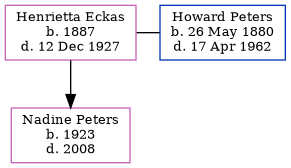

Henrietta May Peters (née Eckas) 1887 - 1927
[ Home ] | [ Calendar ] | [ Surnames Index ] | [ Family History ]Henrietta Eckas, the wife of Howard Hepple Peters (the third cousin twice-removed on the father's side of Nigel Horne), was born in Missouri, USA in 1887 and married Howard (with whom she had 1 child, Nadine Anita, ) in King, Washington, USA in 19151.
She died on Dec 12, 1927 in Seattle, Washington.
Children
- Nadine Anita was born in 1923
Citations
- United States Marriages - Findmypast
Media
United States Marriages - R_102628103484/2
United States Marriages - R_106135183879/2
United States Marriages - US/FS/M/008452610/2
United States Marriages - US/FS/M/090598091/2
Family Tree
Generated by ged2site. Last updated on Nov 13, 2024